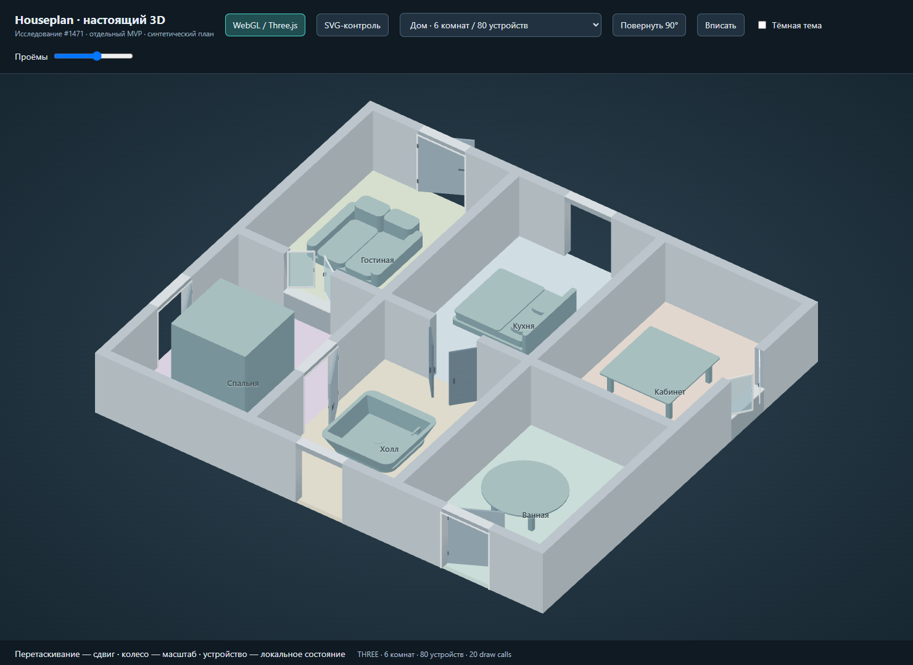
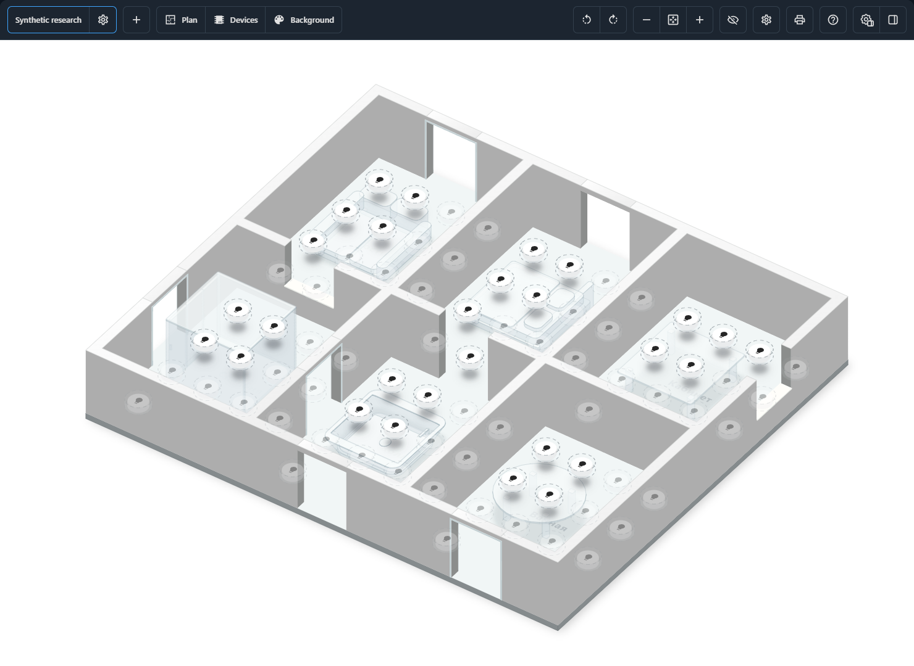
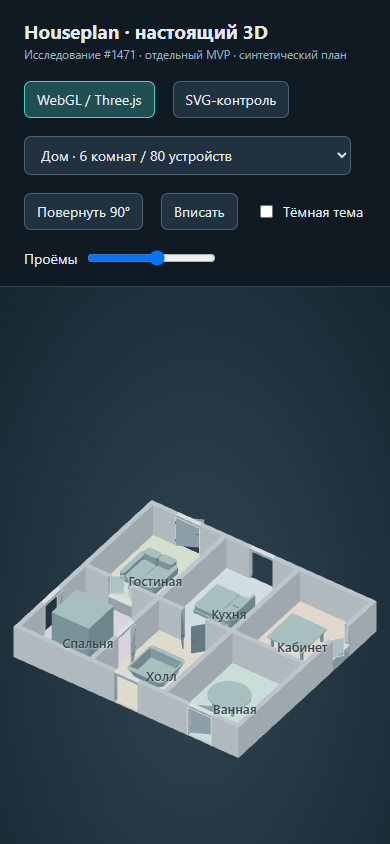

Исследование #1471 · 19 ноября 2026 · без изменений продуктаНастоящий 3D с привычным ракурсом
Three.js + ортографическая камера. Те же источники геометрии стен, проёмов и мебели. Отдельный MVP демонстрирует осуществимость перехода; это ещё не новый режим Houseplan.
Для интерактивного MVP запустите npm start --prefix research/real-3d. Сама галерея работает как обычный локальный HTML.
Проверка геометрии и ракурса

Устройства скрыты только на этих четырёх снимках. Материалы упрощены; точного совпадения пикселей с продуктом не требуется.
Текущий продукт и исследовательский MVP

Это одна геометрия дома, но материалы, плитки и состояния отличаются. Лабораторный SVG — упрощённый контроль, он не заменяет настоящий renderer Houseplan.
Измерения лабораторного перемещения
Медиана трёх серий интервала rAF, меньше — лучше. Одна машина: мощный desktop / NVIDIA D3D11, Chromium 151, DPR 1. Полка ≈8,3 мс ограничена rAF. Это не GPU time и не обещание скорости на планшете. Условия и сырые серии — в отчёте.
Полный JSON измерения
390px viewport

Проверено отсутствие горизонтального переполнения. Снимок сделан на настольном GPU; мобильная производительность не измерялась.
Рекомендация
Сохранить канонический 2D-план и редакторы. Добавлять 3D как ленивый View backend: Three.js для геометрии, текущий HTML для устройств и действий, отрисовка по запросу. Свет, прозрачность, touch, экспорт и слабые устройства — основные части следующего продуктового этапа.
Предварительный объём: 15–25 инженерных дней. Нет слияния в dev, релиза и принятых продуктовых golden-эталонов.